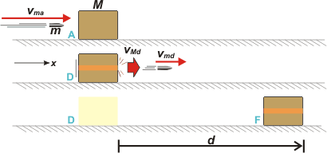

NO ME SALEN
PROBLEMAS RESUELTOS DE FÍSICA DEL CBC
(Leyes de conservación, impulso, cantidad de movimiento, choque)
|
|

|
3.5- Una bala de fusil de 40 g que se mueve a
300 m/s choca contra un bloque de madera de
2 kg que descansa en reposo sobre una superficie
horizontal. El proyectil atraviesa el bloque, y
sale del mismo con una velocidad de 100 m/s.
Sabiendo que el coeficiente de rozamiento entre
el bloque y el piso es μd= 0,2, hallar a qué distancia
de su posición inicial se detendrá.
Hay cierta dificultad en este enunciado, y es comprensible que deje una cantidad de gente afuera. Mirá es así: cuando la bala atraviesa el bloque, eso es un choque, lo planteás y lo resolvés como un choque común y silvestre. Después del choque los cuerpos (bala y bloque) salen despedidos con diferentes velocidades. La bala se pierde. El bloque desliza con rozamiento y se frena. Vamos a verlo en un esquemita que te preparé en tres etapas. |
|  |
|
|
¿Te cierra ahora? En ese caso te imaginarás que es un problema sencillísimo. Primero planteamos y resolvemos el choque (no dejes de leer la discusión del choque). Después, pérdida de energía por rozamiento. Y ya.
Te voy a aclarar las iniciales que usé. m es la masa de la bala, es dato. M es la masa del bloque, es dato. vma es la velocidad de la bala antes del choque, es dato. vMa es la velocidad del bloque antes del choque, es dato y es cero. vmd es la velocidad de la bala después del choque, y es dato. Y vMd es la velocidad del bloque después del choque y es nuestra primera incógnita. Ahí va el choque.
m vma + M vMa = m vmd + M vMd
m vma = m vmd + M vMd
M vMd = m vma — m vmd
vMd = ( vma — vmd ) m / M
vMd = 4 m/s
Ahora, nos olvidamos de la bala y nos concentramos en el bloque. En el tramo DF pierde toda la energía por el rozamiento. La ecuación que describe esa pérdida es la que dice que el trabajo de las fuerzas no conservativas es igual a la variación de energía mecánica.
WFncDF = ΔEMDF
WRozDF = EMF — EMD
— μd M g d = — ½ M vMd²
|
|
|
|
|
|
Bueno, yo te había avisado que era fácil. |
|
|
DISCUSION: Lo más interesante que tiene este ejercicio es que te muestra un choque interesante. Es un choque raro, no te lo voy a negar, pero tiene la virtud de señalarte la existencia de los choques que no son absolutamente elásticos ni absolutamente plásticos.
Los absolutamente elásticos son aquellos en los que durante el choque no se pierde nada de energía. Los absolutamente plásticos ocurren cuando los cuerpos quedan pegados o unidos después del choque. Son dos extremos de un abanico enorme de posibilidades que representa el 99,99 % de los choques reales. No te quedes sólo con los dos extremos, quedate con la realidad.
No hay uniformidad de criterio en cómo nombrar los tipos de choque. Hay quien llama a los intermedios inelásticos. También hay quien llama plástico a todo aquel que no sea perfectamente elástico sin importar que hayan quedado o no unidos los cuerpos. |
|
 |
| DESAFIO: Suponiendo que la bala ejerce sobre el bloque una fuerza constante... ¿cuánto vale esa fuerza? ¿cuánto dura la interacción entre la bala y el bloque? ¿Qué cantidad de energía se perdió durante el paso de la bala a través del bloque? |
|
| Algunos derechos reservados.
Se permite su reproducción citando la fuente legítima, o sea, este sitio. Última actualización dic-06. Buenos Aires, Argentina. |
|
|
|